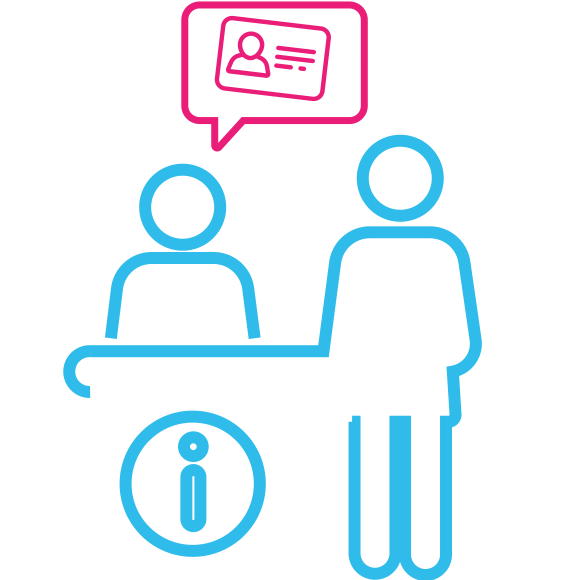

Bienvenidos a ANDES
Plataforma digital orientada a pacientes y miembros de equipos de salud. Te permite acceder y gestionar tus datos de salud de manera ágil y segura.
Novedades
Seguí el día a día de ANDES a través de sus últimas noticias.
05.09.2018
Participamos de la edición 2018 de la JAIIO

El Proyecto ANDES se presentó nuevamente en las Jornadas Argentinas de Informática.
Leer más30.08.2018
Realizamos capacitaciones en el Hospital de Plottier

Fueron dirigidas a administrativos de la organización por parte del equipo ANDES.
Leer más31.07.2018
Brindamos capacitaciones en Zona Metropolitana

Fueron en el marco de la implementación de los módulos MPI y CITAS.
Leer más¿Qué beneficios tengo al estar acreditado en ANDES?
El principal beneficio de estar acreditado en ANDES es aumentar la seguridad de los procesos del cuidado de tu salud. Además, permite que los miembros del equipo de Salud que intervienen en dichos procedimientos, puedan acceder desde cualquier punto en el que te encuentres, a datos importantes que permitan ofrecerte en tiempo y de manera apropiada, respuesta a las necesidades de tu salud.


¿Cómo me registro en ANDES?
- 
PASO 1: Acercate a un punto de acreditación ANDES
Una vez validada tu identidad a partir de tu DNI; te enviaremos un código de activación que deberás ingresar al registrarte en la app.
Ver puntos de acreditación -
PASO 2: Descargá la app de ANDES en tu celular
Encontrala en Google Play Store. Una vez instalada en tu dispositivo, ingresá el código que te enviamos al acreditarte en ANDES.
Descargar ANDES APP
El objetivo de ANDES
Organizar digitalmente los datos de salud de los pacientes, garantizando su accesibilidad de manera rápida y segura; e interrelacionando los agentes involucrados en el proceso de cuidado de tu salud.
Protagonistas
Pacientes
ANDES está pensado para que el paciente no sólo sea, sino que también se sienta DUEÑO de sus Datos de Salud. ANDES te permite el acceso a tu Historia de Salud, la autogestión de tus citas y acelerar los tiempos en que se resuelven tus trámites.
Agentes
Equipos de salud
ANDES ofrece una potente herramienta desarrollada para el registro dinámico de los Datos de Salud; esta información es compleja ya que consiste de miles de ideas modeladas en una multiplicidad de formas determinadas por los episodios de la vida del paciente, la familia, la comunidad y la percepción de los miembros del equipo de salud.
Gestión
Organizaciones
ANDES provee a través de CITAS (Centro Inteligente de Trámites de Acceso a la Salud) herramientas destinadas a una gestión dinámica de la oferta y demanda del menú de prestaciones del Sistema de Salud proveyendo una plataforma multicanal para que los pacientes puedan acceder con mayor celeridad y oportunamente a las prestaciones.
Puntos de acreditación
Actualmente se dispone de cuatro puntos de acreditación: Hospital Castro Rendón, Hospital Heller, Hospital Bouquet Roldán y Hospital Ciudad de Centenario. Estas son las organizaciones y miembros del equipo de salud que ya utilizan ANDES: